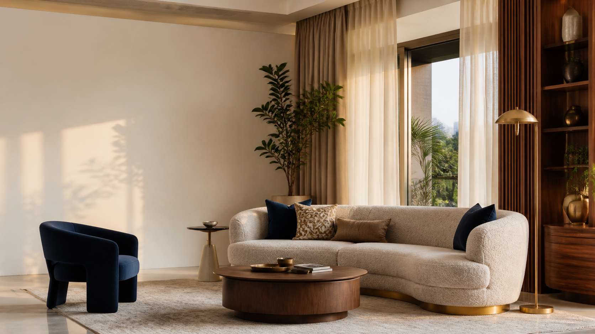

Upholstery & sofa making
Custom sofas and precise reupholstery, made for comfort that holds its shape and style.

Bengaluru's furnishing atelier
Thoughtful materials, tailored furniture and finishing touches that make a space feel entirely yours.
Explore our workThe Astoria perspective
At Astoria Decor, we bring together beautiful fabrics, reliable materials and expert making to shape rooms with warmth and personality.
Whether you are refreshing one corner or furnishing an entire property, we make the process personal from the first conversation to the final detail.
Start a conversationWhat we do
Custom sofas and precise reupholstery, made for comfort that holds its shape and style.
Textural curtain and sofa fabrics selected to soften light and elevate everyday living.
Durable, refined upholstery surfaces in genuine leather and quality leatherette.
Complete furnishing solutions for residences, hotels, cafés and spaces made to welcome.

The Astoria way
Premium materialsWe source for touch, performance and lasting appeal.
Custom solutionsEvery dimension, finish and detail is shaped around your brief.
Expert craftsmanshipSkilled hands bring precision and care to every final piece.
95/10, Muninianjappa Garden
Old KEB Office, Kaval Byrasandra
RT Nagar Post, Bengaluru 560032